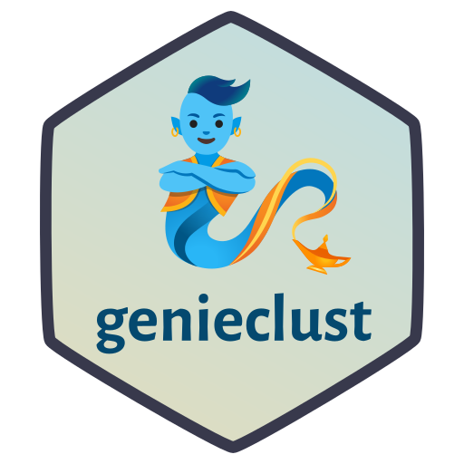
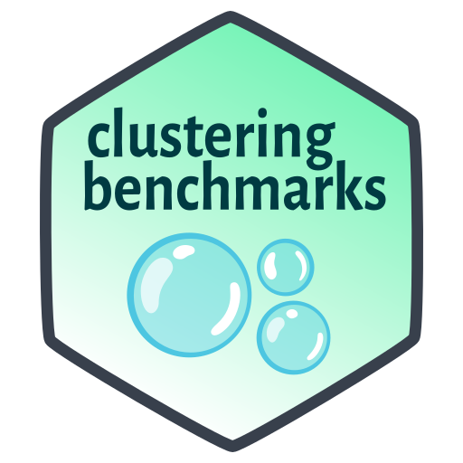

Software

I’ve been programming since the age of 7; my first computer was the C64.
I believe most software should be free (and that good software is).
Shortcuts: ○ genieclust (Python/R) ○ stringi (R/[1]) ○ clustering-benchmarks (Python/R) ○ stringx (R) ○ realtest (R)
My developer (“social media”) profiles: ○ GitHub ○ StackOverflow
Check out my open-access textbooks: ○ Minimalist Data Wrangling with Python ○ Deep R Programming
genieclust (Py+R)
Fast and robust hierarchical clustering with noise point detection: Genie finds meaningful clusters and is fast even on large data sets.
Paper on the genieclust package in SoftwareX (doi:10.1016/j.softx.2021.100722)
Paper on the Genie algorithm in Information Sciences (doi:10.1016/j.ins.2016.05.003)
stringi (R)

stringi (pronounced “stringy”, IPA [strinɡi]) is THE R[1] package for very fast, portable, correct, consistent, and convenient string/text processing in any locale or character encoding. It is one of the most often downloaded packages on CRAN.
Paper on stringi in the Journal of Statistical Software (doi:10.18637/jss.v103.i02)
clustering-benchmarks (Py)
A Framework for Benchmarking Clustering Algorithms
Paper in SoftwareX (doi:10.1016/j.softx.2022.101270)
stringx (R)

Drop-in Replacements for Base String Functions Powered by stringi
realtest (R)
Where Expectations Meet Reality: Realistic Unit Testing in R
Other
TurtleGraphics (R)
Learn R Programming While Having a Jolly Time
(maintained by Barbara Żogała-Siudem)
agop (R)
Aggregation Operators and Preordered Sets in R
genie (R)
A New, Fast, and Outlier Resistant Hierarchical Clustering Algorithm (note that this package been superseded by genieclust)
SimilaR (R)
R Source Code Similarity Evaluation
(maintained by Maciej Bartoszuk)
Paper on the SimilaR package in the R Journal (doi:10.32614/RJ-2020-017)
FuzzyNumbers (R)
Tools to Deal with Fuzzy Numbers in R
CITAN (R)
CITation ANalysis Toolpack [deprecated]